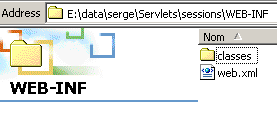
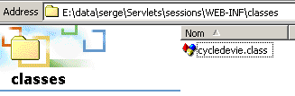
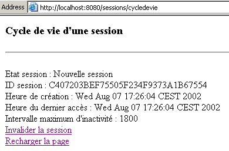
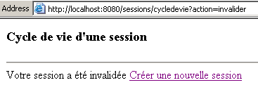
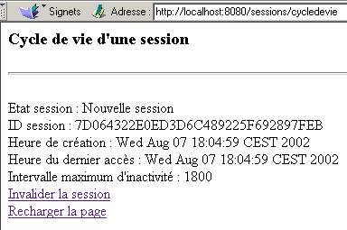
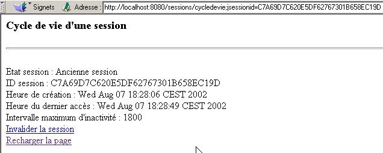
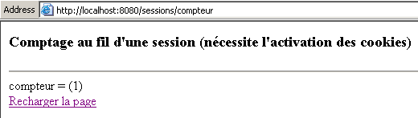

4. Sitzungsverfolgung
4.1. Das Problem
Eine Webanwendung kann aus mehreren Formularübermittlungen zwischen Server und Client bestehen. Dabei ergibt sich folgender Ablauf:
- Schritt 1
- Der Client C1 baut eine Verbindung zum Server auf und sendet seine erste Anfrage.
- Der Server sendet das Formular F1 an den Client C1 und schließt die in Schritt 1 eröffnete Verbindung.
- Schritt 2
- Der Client C1 füllt das Formular aus und sendet es an den Server zurück. Dazu öffnet der Browser eine neue Verbindung zum Server.
- Dieser verarbeitet die Daten aus Formular 1, berechnet daraus die Informationen I1, sendet ein Formular F2 an den Client C1 und schließt die in Schritt 3 geöffnete Verbindung.
- Schritt 3
- Der Zyklus aus den Schritten 3 und 4 wiederholt sich in den Schritten 5 und 6. Am Ende von Schritt 6 hat der Server zwei Formulare mit den Bezeichnungen F1 und F2 empfangen und daraus die Informationen I1 und I2 berechnet.
Die Frage lautet: Wie speichert der Server die Informationen I1 und I2, die mit dem Client C1 verknüpft sind? Dieses Problem wird als „Verfolgung der Sitzung des Kunden C1“ bezeichnet. Um die Ursache zu verstehen, betrachten wir das Schema einer Serveranwendung TCP-IP, die mehrere Kunden gleichzeitig bedient:
 |
In einer klassischen Client-Server-Anwendung TCP-IP:
- stellt der Client eine Verbindung zum Server her
- tauscht über diese Verbindung Daten mit dem Server aus
- wird die Verbindung von einem der beiden Partner geschlossen
Die beiden wichtigen Punkte dieses Mechanismus sind:
- Für jeden Client wird eine einzige Verbindung hergestellt
- Diese Verbindung wird während der gesamten Dauer des Dialogs zwischen dem Server und seinem Client genutzt
Was es dem Server ermöglicht, zu einem bestimmten Zeitpunkt zu wissen, mit welchem Client er gerade arbeitet, ist die Verbindung oder, anders ausgedrückt, die „Leitung“, die ihn mit seinem Client verbindet. Da diese Leitung einem bestimmten Client zugeordnet ist, stammt alles, was über diese Leitung eingeht, von diesem Client, und alles, was über diese Leitung gesendet wird, erreicht den Client.
Der Client-Server-Mechanismus HTTP folgt genau dem oben beschriebenen Schema, weist jedoch die Besonderheit auf, dass der Client-Server-Dialog auf einen einzigen Datenaustausch zwischen Client und Server beschränkt ist:
- Der Client baut eine Verbindung zum Server auf und sendet seine Anfrage
- der Server gibt seine Antwort und schließt die Verbindung
Wenn zum Zeitpunkt T1 ein Client C eine Anfrage an den Server stellt, erhält er eine Verbindung C1, die für den einmaligen Anfrage-Antwort-Austausch dient. Wenn derselbe Client zum Zeitpunkt T2 eine zweite Anfrage an den Server sendet, erhält er eine Verbindung C2, die sich von der Verbindung C1 unterscheidet. Für den Server besteht dann kein Unterschied zwischen dieser zweiten Anfrage des Benutzers C und seiner ursprünglichen Anfrage: In beiden Fällen betrachtet der Server den Kunden als neuen Kunden. Damit eine Verbindung zwischen den verschiedenen Verbindungen des Clients C zum Server hergestellt werden kann, muss sich der Client C vom Server als „Stammkunde“ „anerkannt“ werden und der Server muss die Informationen abrufen, die er über diesen Stammkunden gespeichert hat.
Stellen wir uns eine Verwaltung vor, die wie folgt funktioniert:
- Es gibt eine einzige Warteschlange
- Es gibt mehrere Schalter. Daher können mehrere Kunden gleichzeitig bedient werden. Sobald ein Schalter frei wird, verlässt ein Kunde die Warteschlange, um an diesem Schalter bedient zu werden
- Wenn der Kunde zum ersten Mal erscheint, händigt ihm die Person am Schalter eine Wartemarke mit einer Nummer aus. Der Kunde darf nur eine Frage stellen. Sobald er seine Antwort erhalten hat, muss er den Schalter verlassen und sich wieder ans Ende der Warteschlange stellen. Der Schalterbeamte notiert die Daten dieses Kunden in einer Akte mit der entsprechenden Nummer.
- Wenn der Kunde wieder an der Reihe ist, kann er von einem anderen Schalterbeamten als beim letzten Mal bedient werden. Dieser bittet ihn um seine Wartemarke und holt die Akte mit der Nummer der Wartemarke hervor. Erneut stellt der Kunde eine Anfrage, erhält eine Antwort und es werden Informationen zu seiner Akte hinzugefügt.
- und so weiter... Im Laufe der Zeit erhält der Kunde die Antwort auf alle seine Anfragen. Die Verknüpfung zwischen den verschiedenen Anfragen erfolgt über die Wartemarke und die damit verbundene Akte.
Der Mechanismus zur Sitzungsverfolgung in einer Client-Server-Webanwendung funktioniert analog zum oben beschriebenen Verfahren:
- Bei seiner ersten Anfrage erhält ein Client vom Webserver ein Token
- er legt dieses Token bei jeder seiner nachfolgenden Anfragen vor, um sich zu identifizieren
Das Token kann verschiedene Formen annehmen:
- ein verstecktes Feld in einem Formular
- Der Client stellt seine erste Anfrage (der Server erkennt ihn daran, dass der Client kein Token hat)
- Der Server sendet seine Antwort (ein Formular) und fügt das Token in ein verstecktes Feld dieses Formulars ein. Zu diesem Zeitpunkt wird die Verbindung geschlossen (der Client verlässt die Seite mit seinem Token). Der Server hat gegebenenfalls dafür gesorgt, dass diesem Token Informationen zugeordnet wurden.
- Der Client stellt seine zweite Anfrage, indem er das Formular zurücksendet. Der Server entnimmt dem Formular das Token. Er kann nun die zweite Anfrage des Clients bearbeiten, da er dank des Tokens Zugriff auf die bei der ersten Anfrage berechneten Informationen hat. Dem mit dem Token verknüpften Datensatz werden neue Informationen hinzugefügt, eine zweite Antwort wird an den Client gesendet und die Verbindung wird ein zweites Mal geschlossen. Das Token wurde erneut in das Antwortformular eingefügt, damit der Benutzer es bei seiner nächsten Anfrage vorlegen kann.
- und so weiter...
Der größte Nachteil dieser Technik besteht darin, dass das Token in ein Formular eingefügt werden muss. Ist die Antwort des Servers kein Formular, kann die Methode mit dem versteckten Feld nicht mehr verwendet werden.
- Die Cookie-Methode
- Der Client stellt seine erste Anfrage (der Server erkennt dies daran, dass der Client kein Token hat)
- Der Server sendet seine Antwort und fügt dabei ein Cookie in die Header HTTP der Antwort ein. Dies geschieht mithilfe des Befehls HTTP Set-Cookie:
Set-Cookie: param1=Wert1;param2=Wert2;....
wobei parami die Namen der Parameter und valeursi deren Werte sind. Zu den Parametern gehört auch das Token. Häufig enthält das Cookie nur das Token, während die übrigen Informationen vom Server in dem mit dem Token verknüpften Verzeichnis gespeichert werden. Der Browser, der das Cookie empfängt, speichert es in einer Datei auf der Festplatte. Nach der Antwort des Servers wird die Verbindung geschlossen (der Client verlässt die Schnittstelle mit seinem Token).
- (Fortsetzung)
- Der Client sendet seine zweite Anfrage an den Server. Bei jeder Anfrage an einen Server prüft der Browser unter allen seinen Cookies, ob er eines von dem angefragten Server hat. Wenn ja, sendet er es an den Server, immer in Form eines Befehls HTTP, dem Cookie-Befehl, dessen Syntax der des vom Server verwendeten Befehls Set-Cookie ähnelt:
Cookie: param1=Wert1;param2=Wert2;....
Unter den vom Browser gesendeten Parametern findet der Server das Token, mit dem er den Client erkennen und die damit verbundenen Informationen abrufen kann.
Dies ist die am häufigsten verwendete Form von Tokens. Sie hat jedoch einen Nachteil: Ein Nutzer kann seinen Browser so konfigurieren, dass er keine Cookies akzeptiert. Diese Art von Nutzern hat dann keinen Zugriff auf Webanwendungen, die Cookies verwenden.
- Überarbeitung von URL
- Der Client stellt seine erste Anfrage (der Server erkennt ihn daran, dass der Client kein Token hat)
- Der Server sendet seine Antwort. Diese enthält Links, über die der Nutzer die Anwendung fortsetzen muss. In den URL-Links fügt der Server jeweils das Token in der Form URL;token=Wert hinzu.
- Wenn der Benutzer auf einen der Links klickt, um die Anwendung fortzusetzen, sendet der Browser seine Anfrage an den Webserver und übermittelt ihm in den Headern HTTP das angeforderte URL URL;Token=Wert. Der Server kann dann das Token abrufen.
4.2. Java für die Sitzungsverfolgung
Im Folgenden stellen wir die wichtigsten Methoden zur Sitzungsverfolgung vor:
ruft das Objekt Session ab, zu dem die aktuelle Anfrage gehört. Sollte diese noch nicht Teil einer Sitzung sein, wird eine solche erstellt. | |
ID der aktuellen Sitzung | |
Erstellungsdatum der aktuellen Sitzung (Anzahl der seit dem 1. Januar 1970, 0 Uhr, verstrichenen Millisekunden). | |
Datum des letzten Zugriffs des Kunden auf die Sitzung | |
Maximale Dauer der Inaktivität einer Sitzung in Sekunden. Nach Ablauf dieser Zeit wird die Sitzung ungültig. | |
Legt die maximale Dauer der Inaktivität einer Sitzung in Sekunden fest. Nach Ablauf dieser Zeit wird die Sitzung ungültig. | |
wahr, wenn die Sitzung gerade erstellt wurde | |
Weist einem Parameter in einer bestimmten Sitzung einen Wert zu. Dieser Mechanismus ermöglicht es, Informationen zu speichern, die während der gesamten Sitzung verfügbar bleiben. | |
Entfernt parametre aus den Sitzungsdaten. | |
Wert, der dem Parameter paramètre der Sitzung zugeordnet ist. Gibt null zurück, falls dieser nicht existiert. | |
Liste aller Attribute der aktuellen Sitzung in Form einer Aufzählung | |
Beendet die aktuelle Sitzung. Alle damit verbundenen Informationen werden gelöscht. |
4.3. Beispiel 1
Wir stellen ein Beispiel aus dem hervorragenden Buch „Programmierung mit J2EE“ vor, das im Wrox-Verlag erschienen ist und von Eyrolles vertrieben wird. Dieses Buch ist eine Fundgrube an hochwertigen Informationen für Entwickler von Weblösungen in Java. Die in diesem Buch in Form eines einzelnen Java-Servlets vorgestellte Anwendung wurde hier in Form eines Haupt-Servlets übernommen, das JSP-Seiten zur Anzeige der verschiedenen möglichen Antworten an den Kunden nutzt.
Die Anwendung heißt „sessions“ und ist in der Datei <tomcat>\conf\server.xml wie folgt konfiguriert:
Im oben genannten Ordner „docBase“ befinden sich folgende Elemente:

Die Dateien erreur.jsp, invalide.jsp und valide.jsp sind alle drei der Anwendung „sessions“ zugeordnet. Im oben genannten Ordner WEB-INF befinden sich:

Oben ist die Konfigurationsdatei web.xml der Anwendung „sessions“ zu sehen. Im Ordner classes befindet sich die Servlet-Klassendatei:

Die Anwendungsdatei web.xml lautet wie folgt:
<?xml version="1.0" encoding="ISO-8859-1"?>
<!DOCTYPE web-app
PUBLIC "-//Sun Microsystems, Inc.//DTD Web Application 2.3//EN"
"http://java.sun.com/dtd/web-app_2_3.dtd">
<web-app>
<servlet>
<servlet-name>cycledevie</servlet-name>
<servlet-class>cycledevie</servlet-class>
<init-param>
<param-name>urlSessionValide</param-name>
<param-value>/valide.jsp</param-value>
</init-param>
<init-param>
<param-name>urlSessionInvalide</param-name>
<param-value>/invalide.jsp</param-value>
</init-param>
<init-param>
<param-name>urlErreur</param-name>
<param-value>/erreur.jsp</param-value>
</init-param>
</servlet>
<servlet-mapping>
<servlet-name>cycledevie</servlet-name>
<url-pattern>/cycledevie</url-pattern>
</servlet-mapping>
</web-app>
Das Haupt-Servlet heißt „cycledevie“ (servlet-name) und ist mit der Klassendatei cycledevie.class (servlet-class) verknüpft. Es verfügt über einen Alias „/cycledevie“ (servlet-mapping), über den es über URL und http://localhost:8080/sessions/cycledevie aufgerufen werden kann. Es hat drei Initialisierungsparameter:
URL der Seite, die die Eigenschaften der aktuellen Sitzung anzeigt | |
URL der Seite, die nach einer Ungültigmachung der aktuellen Sitzung angezeigt wird | |
URL der Seite, die bei einem Initialisierungsfehler des Haupt-Servlets „cycledevie“ angezeigt wird |
Die Komponenten der Anwendung „sessions“ sind folgende:
Haupt-Servlet – analysiert die Anfrage des Clients:
| |
| |
wird angezeigt, wenn der Benutzer die aktuelle Sitzung ungültig gemacht hat. Bietet dann an, eine neue Sitzung zu erstellen. | |
wird angezeigt, wenn das Haupt-Servlet bei der Initialisierung auf Fehler stößt. |
Das Haupt-Servlet cycledevie lautet wie folgt:
import java.io.*;
import javax.servlet.*;
import javax.servlet.http.*;
public class cycledevie extends HttpServlet{
// Instanzvariablen
String msgErreur=null;
String urlSessionInvalide=null;
String urlSessionValide=null;
String urlErreur=null;
//-------- GET
public void doGet(HttpServletRequest request, HttpServletResponse response)
throws IOException, ServletException{
// Ist die Initialisierung erfolgreich verlaufen?
if(msgErreur!=null){
// Weiterleitung zur Fehlerseite
getServletContext().getRequestDispatcher(urlErreur).forward(request,response);
}
// Die aktuelle Sitzung wird abgerufen
HttpSession session=request.getSession();
// Die auszuführende Aktion wird analysiert
String action=request.getParameter("action");
// Die aktuelle Sitzung ungültig machen
if(action!=null && action.equals("invalider")){
// Die aktuelle Sitzung wird ungültig gemacht
session.invalidate();
// Weiterleitung an die URL urlSessionInvalide
getServletContext().getRequestDispatcher(urlSessionInvalide).forward(request,response);
}
// Sonstige Fälle
// Die Kontrolle wird an die URL urlSessionInvalide übergeben
getServletContext().getRequestDispatcher(urlSessionValide).forward(request,response);
}
//-------- POST
public void doPost(HttpServletRequest request, HttpServletResponse response)
throws IOException, ServletException{
doGet(request,response);
}
//-------- INIT
public void init(){
// die Initialisierungsparameter werden abgerufen
ServletConfig config=getServletConfig();
urlSessionInvalide=config.getInitParameter("urlSessionInvalide");
urlSessionValide=config.getInitParameter("urlSessionValide");
urlErreur=config.getInitParameter("urlErreur");
// Sind die Parameter in Ordnung?
if(urlSessionValide==null || urlSessionInvalide==null){
msgErreur="Configuration incorrecte";
}
}
}
Folgende Punkte sind zu beachten:
- In seiner Initialisierungsmethode ruft das Servlet seine drei Parameter ab
- Bei der Bearbeitung (doGet) einer Anfrage führt das Servlet folgende Schritte durch:
- überprüft zunächst, ob bei der Initialisierung kein Fehler aufgetreten ist. Falls ja, leitet es die Verarbeitung an die Seite erreur.jsp weiter.
- überprüft den Wert des Parameters action. Hat dieser den Wert „invalider“, leitet das Servlet die Verarbeitung an die Seite invalide.jsp weiter, andernfalls an die Seite valide.jsp.
Die Seite JSP valide.jsp zur Anzeige der Merkmale der aktuellen Sitzung:
<%@ page import="java.util.*" %>
<%
// jspService
// Hier handelt es sich um den Fall, in dem die aktuelle Sitzung beschrieben werden muss
String etat= session.isNew() ? "Nouvelle session" : "Ancienne session";
%>
<!-- Anfang der Seite HTML -->
<html>
<meta http-equiv="pragma" content="no-cache">
<head>
<title>Cycle de vie d'une session</title>
</head>
<body>
<h3>Cycle de vie d'une session</h3>
<hr>
<br>Etat session : <%= etat %>
<br>ID session : <%= session.getId() %>
<br>Heure de création : <%= new Date(session.getCreationTime()) %>
<br>Heure du dernier accès : <%= new Date(session.getLastAccessedTime()) %>
<br>Intervalle maximum d'inactivité : <%= session.getMaxInactiveInterval() %>
<br><a href="/sessions/cycledevie?action=invalider">Invalider la session</a>
<br><a href="/sessions/cycledevie">Recharger la page</a>
<body>
</html>
Es ist zu beachten, dass in der Zeile
ein Session-Objekt verwendet wird, das aus dem Nichts kommt. Tatsächlich gehört dieses Objekt zu den impliziten Objekten, die den Seiten JSP zur Verfügung stehen, ebenso wie die Objekte request, response, out, config (ServletConfig), context (ServletContext), die bereits erwähnt wurden. Die beiden Links auf der Seite verweisen auf das zuvor vorgestellte Servlet cycledevie:
<br><a href="/sessions/cycledevie?action=invalider">Invalider la session</a>
<br><a href="/sessions/cycledevie">Recharger la page</a>
Der Link zum Abbrechen der Sitzung enthält den Parameter action=invalider, der es dem Servlet cycledevie ermöglicht, zu erkennen, dass der Benutzer die aktuelle Sitzung abbrechen möchte. Der andere Link dient zum Neuladen der Seite. Damit der Browser die Seite nicht aus dem Cache abruft, wird die Anweisung HTML verwendet:
verwendet. Sie weist den Browser an, für die empfangene Seite keinen Cache zu verwenden.
Die Seite invalide.jsp sieht wie folgt aus:
<!-- Anfang der Seite HTML -->
<html>
<head>
<title>Cycle de vie d'une session</title>
</head>
<body>
<h3>Cycle de vie d'une session</h3>
<hr>
Votre session a été invalidée
<a href="/sessions/cycledevie">Créer une nouvelle session</a>
</body>
</html>
Sie enthält einen Link, der auf das Servlet cycledevie ohne den Parameter action verweist. Dieser Link veranlasst das Servlet cycledevie, eine neue Sitzung zu erstellen.
Die Seite erreur.jsp sieht wie folgt aus:
<%
// jspService
// Hier handelt es sich um den Fall, in dem die aktuelle Sitzung beschrieben werden muss
String msgErreur= request.getAttribute("msgErreur");
if(msgErreur==null) msgErreur="Erreur non identifiée)";
%>
<!-- Anfang der Seite HTML -->
<html>
<head>
<title>Cycle de vie d'une session</title>
</head>
<body>
<h3>Cycle de vie d'une session</h3>
<hr>
Application indisponible(<%= msgErreur %>)
</body>
</html>
Ihre Aufgabe ist es, die Fehlermeldung anzuzeigen, die ihr vom Servlet cycledevie übermittelt wurde. Sehen wir uns nun einige Ausführungsbeispiele an. Das Servlet wird ein erstes Mal aufgerufen:

Die obige Seite zeigt an, dass wir uns in einer neuen Sitzung befinden. Wir verwenden den Link „Seite neu laden“:

Das vorherige Ergebnis zeigt an, dass wir uns immer noch in derselben Sitzung wie auf der vorherigen Seite befinden (dasselbe ID). Man beachte, dass sich die Uhrzeit des letzten Zugriffs auf diese Sitzung geändert hat. Verwenden wir nun den Link „Sitzung ungültig machen“:

Man beachte die URL dieser neuen Seite mit dem Parameter action=invalider. Nutzen wir den Link „Neue Sitzung erstellen“, um eine neue Sitzung zu erstellen:

Man sieht, dass eine neue Sitzung gestartet wurde. In den vorangegangenen Beispielen basiert die Sitzung auf dem Cookie-Mechanismus. Deaktivieren wir nun die Verwendung von Cookies in unserem Browser und wiederholen wir die Tests. Die folgenden Beispiele wurden mit Netscape Communicator durchgeführt. Aus unerklärlichen Gründen lieferten die mit IE6 durchgeführten Tests unerwartete Ergebnisse, als ob IE6 weiterhin Cookies verwenden würde, obwohl diese deaktiviert worden waren. Das Servlet „cycledevie“ wird ein erstes Mal aufgerufen:

Wir verwenden nun den Link „Seite neu laden“:

Dabei lassen sich zwei Dinge feststellen:
- Die ID der Sitzung hat sich geändert
- das Servlet erkennt die Sitzung als neue Sitzung
Der Tomcat-Server bietet eine Lösung für das Problem von Benutzern, die die Verwendung von Cookies in ihrem Browser deaktiviert haben. Er nutzt zwei Mechanismen, um das zu Beginn dieses Absatzes erwähnte Token zu implementieren: Cookies und die Umschreibung von URL. Ist das Sitzungs-Cookie nicht verfügbar, versucht er, das Token aus der vom Client angeforderten URL zu beziehen. Dazu muss diese den Token enthalten. Generell müssen alle in einem HTML-Dokument generierten Links zur Webanwendung den Token dieser Anwendung enthalten. Dies kann mit der Methode encodeURL erfolgen:
fügt das Token der aktuellen Sitzung dem als Parameter übergebenen URL in der Form URL;jsessionid=xxxx hinzu |
Wir ändern unsere Anwendung wie folgt:
- Im Servlet cycledevie.java werden die URL-Parameter wie folgt kodiert:
// Es wird an die Fehlerseite weitergeleitet
getServletContext().getRequestDispatcher(response.encodeURL(urlErreur)).forward(request,response);
....
// Es wird an die URL urlSessionInvalide übergeben
getServletContext().getRequestDispatcher(response.encodeURL(urlSessionInvalide)).forward(request,response);
....
// Es wird an die URL urlSessionInvalide weitergeleitet
getServletContext().getRequestDispatcher(response.encodeURL(urlSessionValide)).forward(request,response);
- Auf der Seite valide.jsp sind die URL-Codes wie folgt kodiert:
<%
// jspService
// Hier handelt es sich um den Fall, in dem die aktuelle Sitzung beschrieben werden muss
String etat= session.isNew() ? "Nouvelle session" : "Ancienne session";
// Kodierung URL cycledevie
String URLcycledevie=response.encodeURL("/sessions/cycledevie");
%>
............
<br><a href="<%= URLcycledevie %>?action=invalider">Invalider la session</a>
<br><a href="<%= URLcycledevie %>">Recharger la page</a>
- Auf der Seite invalide.jsp sind die URL-Codes verschlüsselt:
<%
// jspservice – die aktuelle Sitzung wird ungültig gemacht
session.invalidate();
// Kodierung URL Lebenszyklus
String URLcycledevie=response.encodeURL("/sessions/cycledevie");
%>
..........
<a href="<%= URLcycledevie %>">Créer une nouvelle session</a>
Nun sind wir bereit für die Tests. Wir verwenden Netscape 4.5, und die Cookies wurden deaktiviert. Wir rufen das Servlet „cycledevie“ ein erstes Mal auf:

und laden die Seite über den Link „Seite neu laden“ neu:

Wir können feststellen, dass:
- sich die Sitzung nicht geändert hat (immer noch ID)
- das URL des Servlets „cycledevie“ enthält tatsächlich das Token, wie das Feld Adresse oben zeigt
- Der Tomcat-Server ruft also das Session-Token in der angeforderten URL ab (sofern der Entwickler darauf geachtet hat, dieses zu verschlüsseln).
4.4. Beispiel 2
Wir stellen nun ein Beispiel vor, das zeigt, wie Informationen in der Sitzung eines Kunden gespeichert werden können. Hier handelt es sich bei der einzigen Information um einen Zähler, der jedes Mal erhöht wird, wenn der Benutzer das URL des Servlets aufruft. Beim ersten Aufruf wird folgende Seite angezeigt:

Wenn man oben auf den Link „Seite neu laden“ klickt, erhält man die folgende neue Seite:

Die Anwendung besteht aus drei Komponenten:
- ein Servlet, das die Anfrage des Clients verarbeitet
- eine JSP-Seite, die den Zählerstand anzeigt
- eine JSP-Seite, die einen eventuellen Fehler anzeigt
Diese drei Komponenten sind in der bereits verwendeten Web-Anwendung „sessions“ installiert. Die Datei web.xml dieser Anwendung wurde geändert, um die neuen Servlets zu konfigurieren:
<?xml version="1.0" encoding="ISO-8859-1"?>
<!DOCTYPE web-app
PUBLIC "-//Sun Microsystems, Inc.//DTD Web Application 2.3//EN"
"http://java.sun.com/dtd/web-app_2_3.dtd">
<web-app>
...
<servlet>
<servlet-name>compteur</servlet-name>
<servlet-class>compteur</servlet-class>
<init-param>
<param-name>urlAffichageCompteur</param-name>
<param-value>/compteur.jsp</param-value>
</init-param>
<init-param>
<param-name>urlErreur</param-name>
<param-value>/erreurcompteur.jsp</param-value>
</init-param>
</servlet>
...
<servlet-mapping>
<servlet-name>compteur</servlet-name>
<url-pattern>/compteur</url-pattern>
</servlet-mapping>
</web-app>
- Das Servlet heißt „Zähler“ (servlet-name) und ist mit der Klassendatei compteur.class (servlet-class) verknüpft
- Es verfügt über zwei Initialisierungsparameter:
- urlAffichageCompteur: URL der Seite JSP zur Anzeige des Zählers
- urlErreur: URL der Seite JSP zur Anzeige eines möglichen Fehlers
- sowie ein Alias /compteur, der dafür sorgt, dass es über URL aufgerufen wird http://localhost:8080/sessions/compteur
Das Servlet compteur.java lautet wie folgt:
import java.io.*;
import javax.servlet.*;
import javax.servlet.http.*;
public class compteur extends HttpServlet{
// Instanzvariablen
String msgErreur=null;
String urlAffichageCompteur=null;
String urlErreur=null;
//-------- GET
public void doGet(HttpServletRequest request, HttpServletResponse response)
throws IOException, ServletException{
// Ist die Initialisierung erfolgreich verlaufen?
if(msgErreur!=null){
// Weiterleitung zur Fehlerseite
getServletContext().getRequestDispatcher(urlErreur).forward(request,response);
}
// Die aktuelle Sitzung wird abgerufen
HttpSession session=request.getSession();
// sowie den Zähler
String compteur=(String)session.getAttribute("compteur");
if(compteur==null) compteur="0";
// Erhöhung des Zählers
try{
compteur=""+(Integer.parseInt(compteur)+1);
}catch(Exception ex){}
// Speichern des Zählers in der Sitzung
session.setAttribute("compteur",compteur);
// sowie in der Abfrage
request.setAttribute("compteur",compteur);
// die Kontrolle wird an die URL zur Anzeige des Zählers übergeben
getServletContext().getRequestDispatcher(urlAffichageCompteur).forward(request,response);
}
//-------- POST
public void doPost(HttpServletRequest request, HttpServletResponse response)
throws IOException, ServletException{
doGet(request,response);
}
//-------- INIT
public void init(){
// Die Initialisierungsparameter werden abgerufen
ServletConfig config=getServletConfig();
urlAffichageCompteur=config.getInitParameter("urlAffichageCompteur");
urlErreur=config.getInitParameter("urlErreur");
// Parameter in Ordnung?
if(urlAffichageCompteur==null){
msgErreur="Configuration incorrecte";
}
}
}
Dieses Servlet hat die gleiche Struktur wie die bereits vorgestellten Servlets. Zu beachten ist lediglich die Verwaltung des Zählers:
- Die Sitzung wird über request.getSession() abgerufen
- Der Zähler wird in dieser Sitzung über session.getAttribute("Zähler") abgerufen
- Wenn ein Wert über null abgerufen wird, bedeutet dies, dass die Sitzung gerade begonnen hat. Der Zähler wird dann auf 0 gesetzt.
- Der Zähler wird erhöht, wieder in die Sitzung geschrieben (session.setAttribute("Zähler",Zähler)) und in die Anfrage eingefügt, die an das Anzeige-Servlet übergeben wird (request.setAttribute("Zähler",Zähler)).
Die Anzeigeseite compteur.jsp sieht wie folgt aus:
<%
// jspService
// Zähler wird abgerufen
String compteur= (String) request.getAttribute("compteur");
if(compteur==null) compteur="inconnu";
%>
<!-- Anfang der Seite HTML -->
<html>
<head>
<title>Comptage au fil d'une session</title>
</head>
<body>
<h3>Comptage au fil d'une session (nécessite l'activation des cookies)</h3>
<hr>
compteur = (<%= compteur %>)
<br><a href="/sessions/compteur">Recharger la page</a>
</body>
</html>
Die obige Seite ruft lediglich das Attribut compteur (request.getAttribute("Zähler")) ab, das ihr vom Haupt-Servlet übergeben wurde, und zeigt es an.
Die Fehlerseite erreurcompteur.jsp sieht wie folgt aus:
<%
// jspService
// Es ist ein Fehler aufgetreten
String msgErreur= request.getAttribute("msgErreur");
if(msgErreur==null) msgErreur="Erreur non identifiée";
%>
<!-- Anfang der Seite HTML -->
<html>
<head>
<title>Comptage au fil d'une session</title>
</head>
<body>
<h3>Comptage au fil d'une session (nécessite l'activation des cookies)</h3>
<hr>
Application indisponible(<%= msgErreur %>)
</body>
</html>
4.5. Beispiel 3
Wir wollen eine Java-Anwendung schreiben, die als Client für die zuvor beschriebene Anwendung compteur fungiert. Sie würde diese N-mal hintereinander aufrufen, wobei N als Parameter übergeben wird. Unser Ziel ist es, einen programmierten Web-Client vorzustellen und zu zeigen, wie Cookies verwaltet werden. Unser Ausgangspunkt ist ein generischer Web-Client, der im Java-Handout desselben Autors vorgestellt wird. Er wird wie folgt aufgerufen:
clientweb URL GET/HEAD
- URL: angeforderte URL
- GET/HEAD: GET, um den Code HTML der Seite abzufragen, HEAD, um sich ausschließlich auf die Kopfzeilen HTTP zu beschränken
Hier ein Beispiel mit URL und http://localhost:8080/sessions/compteur:
E:\data\serge\JAVA\SOCKETS\client web>java clientweb http://localhost:8080/sessions/compteur GET
HTTP/1.1 200 OK
Content-Type: text/html;charset=ISO-8859-1
Date: Thu, 08 Aug 2002 14:21:18 GMT
Connection: close
Server: Apache Tomcat/4.0.3 (HTTP/1.1 Connector)
Set-Cookie: JSESSIONID=B8A9076E552945009215C34A97A0EC5D;Path=/sessions
<!-- Anfang der Seite HTML -->
<html>
<head>
<title>Comptage au fil d'une session</title>
</head>
<body>
<h3>Comptage au fil d'une session (nécessite l'activation des cookies)</h3>
<hr>
compteur = (1)
<br><a href="/sessions/compteur">Recharger la page</a>
</body>
</html>
Das Programm clientweb zeigt alles an, was es vom Server empfängt. Oben ist der Befehl HTTP „Set-cookie“ zu sehen, mit dem der Server ein Cookie an seinen Client sendet. Hier enthält das Cookie zwei Informationen:
- JSESSIONID, das ist das Session-Token
- „Path“, der die URL URL definiert, zu der das Cookie gehört. Path=/sessions weist den Browser an, das Cookie jedes Mal an den Server zurückzusenden, wenn er eine URL anfordert, die mit /sessions beginnt. In der Anwendung sessions haben wir verschiedene Servlets verwendet, darunter die Servlets /sessions/cycledevie und /sessions/compteur. Wird das Servlet /sessions/cycledevie aufgerufen, erhält der Browser ein J-Token. Wird mit demselben Browser anschließend das Servlet /sessions/compteur aufgerufen wird, sendet der Browser das Token J an den Server zurück, da dieses für alle URL-Servlets gilt, die mit /sessions beginnen. In unserem Beispiel müssen die Servlets cycledevie und compteur nicht dasselbe Session-Token teilen. Sie hätten daher nicht in derselben Webanwendung platziert werden dürfen. Dies ist ein wichtiger Punkt: Alle Servlets derselben Anwendung teilen sich dasselbe Session-Token.
- Ein Cookie kann auch eine Gültigkeitsdauer festlegen. Hier fehlt diese Angabe. Das Cookie wird daher beim Schließen des Browsers gelöscht. Ein Cookie kann beispielsweise eine Gültigkeitsdauer von N Tagen haben. Solange es gültig ist, sendet der Browser es jedes Mal zurück, wenn eine der Seiten mit der URL URL seiner Domain (Path) aufgerufen wird. Nehmen wir als Beispiel einen Online-Shop mit der Adresse CD. Dieser kann die Navigation seines Kunden durch den Katalog verfolgen und nach und nach dessen Vorlieben ermitteln: beispielsweise klassische Musik. Diese Vorlieben können in einem Cookie mit einer Lebensdauer von 3 Monaten gespeichert werden. Kehrt derselbe Kunde nach einem Monat auf die Website zurück, sendet der Browser das Cookie an die Serveranwendung zurück. Diese kann dann anhand der im Cookie enthaltenen Informationen die generierten Seiten an die Vorlieben ihres Kunden anpassen.
Der Code des Web-Clients folgt. Er wird später als Ausgangspunkt für einen weiteren Client dienen.
// importierte Pakete
import java.io.*;
import java.net.*;
public class clientweb{
// fordert eine URL an
// zeigt deren Inhalt auf dem Bildschirm an
public static void main(String[] args){
// Syntax
final String syntaxe="pg URI GET/HEAD";
// Anzahl der Argumente
if(args.length != 2)
erreur(syntaxe,1);
// die angeforderte URI wird notiert
String URLString=args[0];
String commande=args[1].toUpperCase();
// Überprüfung der Gültigkeit des URI
URL url=null;
try{
url=new URL(URLString);
}catch (Exception ex){
// URI ist falsch
erreur("L'erreur suivante s'est produite : " + ex.getMessage(),2);
}//Abfangen
// Überprüfung der Bestellung
if(! commande.equals("GET") && ! commande.equals("HEAD")){
// Fehlerhafte Bestellung
erreur("Le second paramètre doit être GET ou HEAD",3);
}
// Die relevanten Informationen werden aus dem URL extrahiert
String path=url.getPath();
if(path.equals("")) path="/";
String query=url.getQuery();
if(query!=null) query="?"+query; else query="";
String host=url.getHost();
int port=url.getPort();
if(port==-1) port=url.getDefaultPort();
// Es kann weiterbearbeitet werden
Socket client=null; // der Kunde
BufferedReader IN=null; // der Lesestrom des Kunden
PrintWriter OUT=null; // der Schreib-Stream des Clients
String réponse=null; // Antwort des Servers
try{
// Verbindung zum Server herstellen
client=new Socket(host,port);
// die Ein- und Ausgabeströme des Kunden werden erstellt TCP
IN=new BufferedReader(new InputStreamReader(client.getInputStream()));
OUT=new PrintWriter(client.getOutputStream(),true);
// Anforderung von URL – Senden der Header HTTP
OUT.println(commande + " " + path + query + " HTTP/1.1");
OUT.println("Host: " + host + ":" + port);
OUT.println("Connection: close");
OUT.println();
// die Antwort wird gelesen
while((réponse=IN.readLine())!=null){
// Die Antwort wird verarbeitet
System.out.println(réponse);
}//while
// ist der Vorgang abgeschlossen
client.close();
} catch(Exception e){
// die Ausnahme wird behandelt
erreur(e.getMessage(),4);
}//catch
}//main
// Fehleranzeige
public static void erreur(String msg, int exitCode){
// Fehleranzeige
System.err.println(msg);
// Beenden mit Fehler
System.exit(exitCode);
}//Fehler
}//Klasse
Wir erstellen nun das Programm clientCompteur, das wie folgt aufgerufen wird:
clientCompteur URL N [JSESSIONID]
- URL: URL des Zähler-Servlets
- N: Anzahl der Aufrufe dieses Servlets
- JSESSIONID: optionaler Parameter – Session-Token
Das Ziel des Programms ist es, das Zähler-Servlet N-mal aufzurufen, dabei das Sitzungs-Cookie zu verwalten und jedes Mal den vom Server zurückgegebenen Zählerwert anzuzeigen. Am Ende der N Aufrufe muss der Wert des Zählers N betragen. Hier ist ein erstes Ausführungsbeispiel:
E:\data\serge\Servlets\sessions\jb7>java.bat clientCompteur http://localhost:8080/sessions/Zähler 3
--> GET /sessions/compteur HTTP/1.1
--> Host: localhost:8080
--> Connection: close
-->
HTTP/1.1 200 OK
Content-Type: text/html;charset=ISO-8859-1
Date: Thu, 08 Aug 2002 18:25:00 GMT
Connection: close
Server: Apache Tomcat/4.0.3 (HTTP/1.1 Connector)
Set-Cookie: JSESSIONID=92DB3808CE8FCB47D47D997C8B52294A;Path=/sessions
cookie trouvÚ : 92DB3808CE8FCB47D47D997C8B52294A
compteur : 1
--> GET /sessions/compteur HTTP/1.1
--> Host: localhost:8080
--> Cookie: JSESSIONID=92DB3808CE8FCB47D47D997C8B52294A
--> Connection: close
-->
HTTP/1.1 200 OK
Content-Type: text/html;charset=ISO-8859-1
Date: Thu, 08 Aug 2002 18:25:00 GMT
Connection: close
Server: Apache Tomcat/4.0.3 (HTTP/1.1 Connector)
compteur : 2
--> GET /sessions/compteur HTTP/1.1
--> Host: localhost:8080
--> Cookie: JSESSIONID=92DB3808CE8FCB47D47D997C8B52294A
--> Connection: close
-->
HTTP/1.1 200 OK
Content-Type: text/html;charset=ISO-8859-1
Date: Thu, 08 Aug 2002 18:25:00 GMT
Connection: close
Server: Apache Tomcat/4.0.3 (HTTP/1.1 Connector)
compteur : 3
Das Programm zeigt Folgendes an:
- die Kopfzeilen HTTP, die es in Form von -->
- die Header HTTP, die es empfängt
- den Zählerstand nach jedem Aufruf
Man sieht, dass beim ersten Aufruf:
- der Client kein Cookie sendet
- der Server sendet eines
Bei den folgenden Aufrufen:
- sendet der Client systematisch das Cookie zurück, das er beim ersten Aufruf vom Server erhalten hat. Dadurch kann der Server ihn wiedererkennen und seinen Zähler erhöhen.
- Der Server sendet seinerseits kein Cookie mehr zurück
Wir starten das vorherige Programm erneut und übergeben das oben genannte Token als dritten Parameter:
E:\data\serge\Servlets\sessions\jb7>java.bat clientCompteur http://localhost:8080/sessions/Zähler 3 92DB3808CE8FCB47D47D997C8B52294A
--> GET /sessions/compteur HTTP/1.1
--> Host: localhost:8080
--> Cookie: JSESSIONID=92DB3808CE8FCB47D47D997C8B52294A
--> Connection: close
-->
HTTP/1.1 200 OK
Content-Type: text/html;charset=ISO-8859-1
Date: Thu, 08 Aug 2002 18:25:25 GMT
Connection: close
Server: Apache Tomcat/4.0.3 (HTTP/1.1 Connector)
compteur : 4
--> GET /sessions/compteur HTTP/1.1
--> Host: localhost:8080
--> Cookie: JSESSIONID=92DB3808CE8FCB47D47D997C8B52294A
--> Connection: close
-->
HTTP/1.1 200 OK
Content-Type: text/html;charset=ISO-8859-1
Date: Thu, 08 Aug 2002 18:25:25 GMT
Connection: close
Server: Apache Tomcat/4.0.3 (HTTP/1.1 Connector)
compteur : 5
--> GET /sessions/compteur HTTP/1.1
--> Host: localhost:8080
--> Cookie: JSESSIONID=92DB3808CE8FCB47D47D997C8B52294A
--> Connection: close
-->
HTTP/1.1 200 OK
Content-Type: text/html;charset=ISO-8859-1
Date: Thu, 08 Aug 2002 18:25:25 GMT
Connection: close
Server: Apache Tomcat/4.0.3 (HTTP/1.1 Connector)
compteur : 6
Hier ist zu sehen, dass der Server bereits beim ersten Aufruf des Clients ein gültiges Sitzungs-Cookie erhält. Dabei ist zu beachten, dass bei Tomcat die maximale Inaktivitätsdauer einer Sitzung standardmäßig 20 Minuten beträgt (dies ist jedoch konfigurierbar). Wenn der zweite Aufruf des Programms das beim ersten Aufruf empfangene Cookie schnell genug übermittelt, handelt es sich für den Server um dieselbe Sitzung. Hier wird auf eine potenzielle Sicherheitslücke hingewiesen. Wenn es mir gelingt, ein Session-Token im Netzwerk abzufangen, kann ich mich als derjenige ausgeben, der die Sitzung initiiert hat. In unserem Beispiel stellt der erste Aufruf denjenigen dar, der die Sitzung initiiert (möglicherweise mit einem Benutzernamen und einem Passwort, die ihm das Recht auf ein Token einräumen), und der zweite Aufruf stellt denjenigen dar, der das Sitzungstoken des ersten Aufrufs „gehackt“ hat. Handelt es sich bei der laufenden Transaktion um eine Banktransaktion, kann dies sehr unangenehm werden...
Der Client-Code lautet wie folgt:
// importierte Pakete
import java.io.*;
import java.net.*;
import java.util.regex.*;
public class clientCompteur{
// fordert eine URL an
// zeigt deren Inhalt auf dem Bildschirm an
public static void main(String[] args){
// Syntax
final String syntaxe="pg URL-COMPTEUR N [JSESSIONID]";
// Anzahl der Argumente
if(args.length !=2 && args.length != 3)
erreur(syntaxe,1);
// die angeforderte URL wird notiert
String URLString=args[0];
// Überprüfung der Gültigkeit des URL
URL url=null;
try{
url=new URL(URLString);
}catch (Exception ex){
// URI ist falsch
erreur("L'erreur suivante s'est produite : " + ex.getMessage(),2);
}//Abfangen
// Überprüfung der Anzahl der Aufrufe N
int N=0;
try{
N=Integer.parseInt(args[1]);
if(N<=0) throw new Exception();
}catch(Exception ex){
// Falsches Argument N
erreur("Le nombre d'appels N doit être un entier >0",3);
}
// Wurde das Token JSESSIONID als Parameter übergeben?
String JSESSIONID="";
if (args.length==3) JSESSIONID=args[2];
// Die relevanten Informationen werden aus dem URL extrahiert
String path=url.getPath();
if(path.equals("")) path="/";
String query=url.getQuery();
if(query!=null) query="?"+query; else query="";
String host=url.getHost();
int port=url.getPort();
if(port==-1) port=url.getDefaultPort();
// Es kann weitergearbeitet werden
Socket client=null; // mit dem Client
BufferedReader IN=null; // der Lesestrom des Kunden
PrintWriter OUT=null; // der Schreib-Stream des Clients
String réponse=null; // Antwort des Servers
// das in den Kopfzeilen gesuchte Muster HTTP
Pattern modèleCookie=Pattern.compile("^Set-Cookie: JSESSIONID=(.*?);");
// das im Code gesuchte Muster HTML
Pattern modèleCompteur=Pattern.compile("compteur = .*?(\\d+)");
// das Ergebnis des Vergleichs mit dem Muster
Matcher résultat=null;
// ein boolescher Wert, der das Ergebnis der Suche nach dem Zähler angibt
boolean compteurTrouvé;
try{
// Es werden N Aufrufe an den Server gesendet
for(int i=0;i<N;i++){
// Es wird eine Verbindung zum Server hergestellt
client=new Socket(host,port);
// Die Ein- und Ausgangsströme des Kunden werden erstellt: TCP
IN=new BufferedReader(new InputStreamReader(client.getInputStream()));
OUT=new PrintWriter(client.getOutputStream(),true);
// Anfrage an URL – Senden der Header HTTP
envoie(OUT,"GET " + path + query + " HTTP/1.1");
envoie(OUT,"Host: " + host + ":" + port);
if(! JSESSIONID.equals("")){
envoie(OUT,"Cookie: JSESSIONID="+JSESSIONID);
}
envoie(OUT,"Connection: close");
envoie(OUT,"");
// Die Antwort wird bis zum Ende der Header gelesen, wobei nach einem eventuellen Cookie gesucht wird
while((réponse=IN.readLine())!=null){
// Antwort weiterverfolgen
System.out.println(réponse);
// Leere Zeile?
if(réponse.equals("")) break;
// Zeile HTTP nicht leer
// Wenn das Session-Token fehlt, wird danach gesucht
if (JSESSIONID.equals("")){
// die Zeile HTTP wird mit dem Cookie-Muster verglichen
résultat=modèleCookie.matcher(réponse);
if(résultat.find()){
// Das Cookie wurde gefunden
JSESSIONID=résultat.group(1);
}
}
}//while
// Die Überprüfung der Header HTTP ist abgeschlossen – wir fahren mit dem Code HTML fort
compteurTrouvé=false;
while((réponse=IN.readLine())!=null){
// Enthält die aktuelle Zeile den Zähler?
if (! compteurTrouvé){
résultat=modèleCompteur.matcher(réponse);
if(résultat.find()){
// Der Zähler wurde gefunden – er wird angezeigt
System.out.println("compteur : " + résultat.group(1));
compteurTrouvé=true;
}
}
}//while
// Es ist fertig
client.close();
}//for
} catch(Exception e){
// Die Ausnahme wird behandelt
erreur(e.getMessage(),4);
}//catch
}//main
// Anzeige der Fehler
public static void erreur(String msg, int exitCode){
// Fehleranzeige
System.err.println(msg);
// Beenden mit Fehler
System.exit(exitCode);
}//Fehler
// Verfolgung des Client-Server-Austauschs
public static void envoie(PrintWriter OUT,String msg){
// Nachricht an den Server senden
OUT.println(msg);
// Bildschirmüberwachung
System.out.println("--> "+msg);
}//Fehler
}//Klasse
Schauen wir uns die wichtigsten Punkte dieses Programms genauer an:
- Es müssen N Client-Server-Wechsel durchgeführt werden. Deshalb befinden sich diese in einer Schleife
- Bei jedem Austausch baut der Client eine Verbindung TCP-IP zum Server auf. Sobald diese hergestellt ist, sendet er die Header HTTP seiner Anfrage an den Server:
// Anforderung von URL – Senden der Header HTTP
envoie(OUT,"GET " + path + query + " HTTP/1.1");
envoie(OUT,"Host: " + host + ":" + port);
if(! JSESSIONID.equals("")){
envoie(OUT,"Cookie: JSESSIONID="+JSESSIONID);
}
envoie(OUT,"Connection: close");
envoie(OUT,"");
Wenn das Token JSESSIONID verfügbar ist, wird es in Form eines Cookies gesendet, andernfalls nicht.
- Nachdem der Client seine Anfrage gesendet hat, wartet er auf die Antwort des Servers. Zunächst durchsucht er die Header HTTP dieser Antwort nach einem möglichen Cookie. Um dieses zu finden, vergleicht er die empfangenen Zeilen mit dem regulären Ausdruck des Cookies:
// Das gesuchte Muster in den Kopfzeilen HTTP
Pattern modèleCookie=Pattern.compile("^Set-Cookie: JSESSIONID=(.*?);");
...........................
// Die Antwort wird bis zum Ende der Header gelesen, wobei nach einem eventuellen Cookie gesucht wird
while((réponse=IN.readLine())!=null){
// Weiterverfolgung der Antwort
System.out.println(réponse);
// Leere Zeile?
if(réponse.equals("")) break;
// Zeile HTTP nicht leer
// Wenn das Session-Token fehlt, wird danach gesucht
if (JSESSIONID.equals("")){
// Die Zeile „HTTP“ wird mit dem Cookie-Muster verglichen
résultat=modèleCookie.matcher(réponse);
if(résultat.find()){
// Das Cookie wurde gefunden
JSESSIONID=résultat.group(1);
}
}
}//while
- Sobald das Token zum ersten Mal gefunden wurde, wird es bei nachfolgenden Aufrufen des Servers nicht mehr gesucht. Nachdem die Header HTTP der Antwort verarbeitet wurden, wechselt man zum Code HTML derselben Antwort. In dieser wird nach der Zeile gesucht, die den Wert des Zählers angibt. Diese Suche erfolgt ebenfalls mit einem regulären Ausdruck:
// Das gesuchte Zählermuster im Code HTML
Pattern modèleCompteur=Pattern.compile("compteur = .*?(\\d+)");
..................................
// Die Header sind fertig HTTP – Weiter zum Code HTML
compteurTrouvé=false;
while((réponse=IN.readLine())!=null){
// Enthält die aktuelle Zeile den Zähler?
if (! compteurTrouvé){
résultat=modèleCompteur.matcher(réponse);
if(résultat.find()){
// Der Zähler wurde gefunden – er wird angezeigt
System.out.println("compteur : " + résultat.group(1));
compteurTrouvé=true;
}
}
}//while
4.6. Beispiel 4
Im vorherigen Beispiel sendet der Webclient das Token in Form eines Cookies zurück. Wir haben gesehen, dass er es auch direkt in der angeforderten URL-Anfrage in der Form URL;jsessionid=xxx zurücksenden kann. Lassen Sie uns dies überprüfen. Das Programm clientCompteur.java wird in clientCompteur2.java umgewandelt und wie folgt geändert:
....
// URL abfragen – Header senden HTTP
if(JSESSIONID.equals(""))
envoie(OUT,"GET " + path + query + " HTTP/1.1");
else envoie(OUT,"GET " + path + query + ";jsessionid=" + JSESSIONID + " HTTP/1.1");
envoie(OUT,"Host: " + host + ":" + port);
envoie(OUT,"Connection: close");
envoie(OUT,"");
....
Der Kunde fordert also den URL des Zählers über GET URL;jsessionid=xx HTTP/1.1 an und sendet kein Cookie mehr. Das ist die einzige Änderung. Hier sind die Ergebnisse eines ersten Aufrufs:
E:\data\serge\Servlets\sessions\jb7>java.bat clientCompteur2 http://localhost:8080/sessions/Zähler 2
--> GET /sessions/compteur HTTP/1.1
--> Host: localhost:8080
--> Connection: close
-->
HTTP/1.1 200 OK
Content-Type: text/html;charset=ISO-8859-1
Date: Thu, 08 Aug 2002 18:49:30 GMT
Connection: close
Server: Apache Tomcat/4.0.3 (HTTP/1.1 Connector)
Set-Cookie: JSESSIONID=48A6DBA8357D808EC012AAF3A2AFDA63;Path=/sessions
cookie trouvÚ : 48A6DBA8357D808EC012AAF3A2AFDA63
compteur : 1
--> GET /sessions/compteur;jsessionid=48A6DBA8357D808EC012AAF3A2AFDA63 HTTP/1.1
--> Host: localhost:8080
--> Connection: close
-->
HTTP/1.1 200 OK
Content-Type: text/html;charset=ISO-8859-1
Date: Thu, 08 Aug 2002 18:49:30 GMT
Connection: close
Server: Apache Tomcat/4.0.3 (HTTP/1.1 Connector)
compteur : 2
Beim ersten Aufruf fordert der Client die URL ohne Sitzungstoken an. Der Server antwortet ihm, indem er ihm das Token sendet. Der Client fragt daraufhin dieselbe URL erneut ab und fügt das empfangene Token hinzu. Man sieht, dass der Zähler korrekt erhöht wurde – ein Beweis dafür, dass der Server erkannt hat, dass es sich um dieselbe Sitzung handelt.
4.7. Beispiel 5
Dieses Beispiel zeigt eine Anwendung, die aus drei Seiten besteht, die wir page0, page1 und page2 nennen. Der Benutzer muss diese in dieser Reihenfolge aufrufen:
- Seite0 ist ein Formular, das eine Angabe abfragt: einen Namen
- Seite 1 ist ein Formular, das als Antwort auf das Absenden des Formulars von Seite 0 angezeigt wird. Es fragt eine zweite Angabe ab: ein Alter
- Seite 2 ist ein Dokument mit der ID HTML, das den über Seite 0 ermittelten Namen und das über Seite 1 ermittelte Alter anzeigt.
Dabei finden drei Client-Server-Austausche statt:
- Beim ersten Austausch wird das Formular „page0“ vom Client angefordert und vom Server gesendet
- Beim zweiten Datenaustausch wird das Formular „page1“ vom Client angefordert und vom Server gesendet. Der Client sendet den Namen an den Server.
- Beim dritten Datenaustausch wird das Dokument „page3“ vom Client angefordert und vom Server gesendet. Der Client sendet das Alter an den Server. Das Dokument page3 muss den Namen und das Alter anzeigen. Der Name wurde vom Server beim zweiten Datenaustausch abgerufen und seitdem „vergessen“. Es wird eine Sitzung verwendet, um den Namen beim zweiten Datenaustausch zu speichern, damit er beim dritten Datenaustausch verfügbar ist.
Die beim ersten Datenaustausch erhaltene Seite „page0“ sieht wie folgt aus:

Das Feld für den Namen wird ausgefüllt:

Man klickt auf die Schaltfläche „Suite“ und erhält daraufhin die folgende Seite „page1“:

Man füllt das Feld für das Alter aus:

Man klickt auf die Schaltfläche Suite und erhält daraufhin die folgende Seite „page2“:

Wenn man die Seite „page0“ an den Server übermittelt, kann dieser sie mit einem Fehlercode zurücksenden, falls das Feld „Name“ leer ist:

Wenn man die Seite „page1“ an den Server übermittelt, kann dieser sie mit einem Fehlercode zurücksenden, wenn das Alter ungültig ist:

Die Anwendung besteht aus einem Servlet und vier Seiten JSP:
zeigt Seite0 an | |
zeigt Seite 1 an | |
Seite 2 anzeigen | |
zeigt eine Fehlerseite an |
Die Webanwendung heißt „suitedepages“ und ist in der Tomcat-Datei „server.xml“ wie folgt konfiguriert:
Die Konfigurationsdatei web.xml der Anwendung „suitedepages“ lautet wie folgt:
<?xml version="1.0" encoding="ISO-8859-1"?>
<!DOCTYPE web-app
PUBLIC "-//Sun Microsystems, Inc.//DTD Web Application 2.3//EN"
"http://java.sun.com/dtd/web-app_2_3.dtd">
<web-app>
<servlet>
<servlet-name>main</servlet-name>
<servlet-class>main</servlet-class>
<init-param>
<param-name>urlPage0</param-name>
<param-value>/page0.jsp</param-value>
</init-param>
<init-param>
<param-name>urlPage1</param-name>
<param-value>/page1.jsp</param-value>
</init-param>
<init-param>
<param-name>urlPage2</param-name>
<param-value>/page2.jsp</param-value>
</init-param>
<init-param>
<param-name>urlErreur</param-name>
<param-value>/erreur.jsp</param-value>
</init-param>
</servlet>
<servlet-mapping>
<servlet-name>main</servlet-name>
<url-pattern>/main</url-pattern>
</servlet-mapping>
</web-app>
Das Haupt-Servlet heißt „main“ und ist dank seines Alias (Servlet-Mapping) über die URLs URL und http://localhost:8080/suitedepages/main erreichbar. Es verfügt über vier Initialisierungsparameter, bei denen es sich um die URL der vier Seiten JSP handelt, die für die verschiedenen Ansichten verwendet werden. Der Code des Haupt-Servlets lautet wie folgt:
import java.io.*;
import javax.servlet.*;
import javax.servlet.http.*;
import java.util.*;
import java.util.regex.*;
public class main extends HttpServlet{
// Instanzvariablen
String msgErreur=null;
String urlPage0=null;
String urlPage1=null;
String urlPage2=null;
String urlErreur=null;
//-------- GET
public void doGet(HttpServletRequest request, HttpServletResponse response)
throws IOException, ServletException{
// Ist die Initialisierung erfolgreich verlaufen?
if(msgErreur!=null){
// Weiterleitung an die Fehlerseite
getServletContext().getRequestDispatcher(urlErreur).forward(request,response);
}
// Der Schrittparameter wird abgerufen
String étape=request.getParameter("etape");
// Die aktuelle Sitzung wird abgerufen
HttpSession session=request.getSession();
// Der aktuelle Schritt wird verarbeitet
if(étape==null) étape0(request,response,session);
if(étape.equals("1")) étape1(request,response,session);
if(étape.equals("2")) étape2(request,response,session);
// andere Fälle sind ungültig
étape0(request,response,session);
}
//-------- POST
public void doPost(HttpServletRequest request, HttpServletResponse response)
throws IOException, ServletException{
doGet(request,response);
}
//-------- INIT
public void init(){
// Die Initialisierungsparameter werden abgerufen
ServletConfig config=getServletConfig();
urlPage0=config.getInitParameter("urlPage0");
urlPage1=config.getInitParameter("urlPage1");
urlPage2=config.getInitParameter("urlPage2");
urlErreur=config.getInitParameter("urlErreur");
// Parameter in Ordnung?
if(urlPage0==null || urlPage1==null || urlPage2==null){
msgErreur="Configuration incorrecte";
}
}
//-------- Schritt 0
public void étape0(HttpServletRequest request, HttpServletResponse response, HttpSession session)
throws IOException, ServletException{
// Es werden einige Attribute festgelegt
request.setAttribute("nom","");
// Seite 0 wird angezeigt
request.getRequestDispatcher(urlPage0).forward(request,response);
}
//-------- Schritt 1
public void étape1(HttpServletRequest request, HttpServletResponse response, HttpSession session)
throws IOException, ServletException{
// Der Name wird aus der Abfrage abgerufen
String nom=request.getParameter("nom");
// Name gesetzt?
if(nom==null) étape0(request,response,session);
// Eventuelle Leerzeichen werden aus dem Namen entfernt
nom=nom.trim();
// Er wird in ein Attribut der Abfrage eingefügt
request.setAttribute("nom",nom);
// Leerer Name?
if(nom.equals("")){
// Das ist ein Fehler
ArrayList erreurs=new ArrayList();
erreurs.add("Nous n'avez pas indiqué de nom");
// Fehler werden in die Abfrage aufgenommen
request.setAttribute("erreurs",erreurs);
// Zurück zu Seite 0
étape0(request,response,session);
}
// Gültiger Name – wird in der aktuellen Sitzung gespeichert
session.setAttribute("nom",nom);
// Das Attribut „age“ wird in der Abfrage festgelegt
request.setAttribute("age","");
// Seite 1 wird angezeigt
request.getRequestDispatcher(urlPage1).forward(request,response);
}
//-------- Schritt 2
public void étape2(HttpServletRequest request, HttpServletResponse response, HttpSession session)
throws IOException, ServletException{
// Der Name wird aus der Sitzung abgerufen
String nom=(String)session.getAttribute("nom");
// Ist der Name gesetzt?
if(nom==null) étape0(request,response,session);
// wird in ein Attribut der Abfrage gesetzt
request.setAttribute("nom",nom);
// Das Alter wird aus der Abfrage abgerufen
String age=request.getParameter("age");
// Alter gesetzt?
if(age==null){
// Zurück zu Seite 1
request.setAttribute("age","");
request.getRequestDispatcher(urlPage1).forward(request,response);
}
// Das Alter wird in der Abfrage gespeichert
age=age.trim();
request.setAttribute("age",age);
// Ist das Alter gültig?
if(! Pattern.matches("^\\s*\\d+\\s*$",age)){
// Es liegt ein Fehler vor
ArrayList erreurs=new ArrayList();
erreurs.add("Age invalide");
// Fehler werden in die Abfrage aufgenommen
request.setAttribute("erreurs",erreurs);
// Zurück zu Seite 1
request.getRequestDispatcher(urlPage1).forward(request,response);
}
// Gültiges Alter – Seite 2 wird angezeigt
request.getRequestDispatcher(urlPage2).forward(request,response);
}
}
- Die Methode init ruft die vier Initialisierungsparameter ab und gibt eine Fehlermeldung aus, wenn einer davon fehlt
- Wir haben gesehen, dass die Anfrage drei Datenaustausche umfasst. Um zu erfahren, an welcher Stelle man sich in diesen befindet, verfügen die Formulare page0 und page1 über eine versteckte Variable etape, die den Wert 1 (page0) oder 2 (page1). Diese Nummer könnte man hier als die Nummer der nächsten anzuzeigenden Seite betrachten. In der Methode doGet wird dieser Parameter aus der Anfrage abgerufen, und je nach seinem Wert wird die Verarbeitung an drei weitere Methoden delegiert:
- étape0 verarbeitet die ursprüngliche Anfrage und ruft page0 auf
- étape1 verarbeitet das Formular von page0 und ruft page1 auf oder erneut page0, falls ein Fehler aufgetreten ist
- Schritt 2 verarbeitet das Formular page1 und sendet page2 oder erneut page1, falls ein Fehler aufgetreten ist
- Schritt 0
- zeigt page0 mit einem leeren Namen an
- Schritt 1
- Ruft den Parameter nom aus dem Formular page0 ab.
- Prüft, ob der Name vorhanden ist (nicht null). Ist dies nicht der Fall, wird erneut page0 angezeigt, als wäre es der erste Aufruf.
- Prüft, ob der Name nicht leer ist. Ist dies nicht der Fall, wird erneut page0 mit einer Fehlermeldung angezeigt.
- speichert den Namen in der aktuellen Sitzung und zeigt page1 an, wenn der Name gültig ist.
- Schritt 2
- Ruft den Parameter nom aus der aktuellen Sitzung ab.
- Prüft, ob der Name existiert (nicht null). Ist dies nicht der Fall, wird erneut page0 angezeigt, als wäre es der erste Aufruf.
- Ruft den Parameter age aus der aktuellen Anfrage ab, die von page1 gesendet wurde.
- prüft, ob das Alter gültig ist. Ist dies nicht der Fall, wird erneut page1 mit einer Fehlermeldung angezeigt.
- Speichert den Namen und das Alter als Abfrageattribute und zeigt page2 an, wenn Name und Alter gültig sind.
Die Seite page0.jsp sieht wie folgt aus:
<%@ page import="java.util.*" %>
<% // page0.jsp
// Die Attribute der Abfrage werden abgerufen
String nom=(String)request.getAttribute("nom");
ArrayList erreurs=(ArrayList)request.getAttribute("erreurs");
// Sind die Attribute gültig?
if(nom==null){
// Zurück zum Haupt-Servlet
request.getRequestDispatcher("/main").forward(request,response);
}
%>
<html>
<head>
<title>page 0</title>
</head>
<body>
<h3>Page 0/2</h3>
<form name="frmNom" method="POST" action="/suitedepages/main">
<input type="hidden" name="etape" value="1">
<table>
<tr>
<td>Votre nom</td>
<td><input type="text" name="nom" value="<%= nom %>"></td>
</tr>
</table>
<input type="submit" value="Suite">
</form>
<% // Fehler?
if (erreurs!=null){
%>
<hr>
<font color="red">
Les erreurs suivantes se sont produites
<ul>
<% for(int i=0;i<erreurs.size();i++){ %>
<li><%= erreurs.get(i) %>
<% }//for %>
</ul>
<% }//if %>
</body>
</html>
- Die Seite page0.jsp kann vom Haupt-Servlet in zwei Fällen aufgerufen werden:
- bei der ersten Anfrage
- nach der Verarbeitung des Formulars von page0, wenn ein Fehler auftritt
- Der anzuzeigende Parameter nom wird ihr vom Haupt-Servlet übermittelt, ebenso wie eine eventuelle Fehlerliste. Das Servlet page0.jsp beginnt daher damit, diese beiden Informationen abzurufen.
- Das Formular wird mit dem versteckten Feld (hidden) etape an das Haupt-Servlet „gesendet“, das angibt, in welchem Schritt der Anwendung man sich befindet.
Die Seite page1.jsp sieht wie folgt aus:
<%@ page import="java.util.*" %>
<% // page1.jsp
// Die Attribute der Anfrage werden abgerufen
String nom=(String)request.getAttribute("nom");
String age=(String)request.getAttribute("age");
ArrayList erreurs=(ArrayList)request.getAttribute("erreurs");
// Sind die Attribute gültig?
if(nom==null || age==null){
// Zurück zum Haupt-Servlet
request.getRequestDispatcher("/main").forward(request,response);
}
%>
<html>
<head>
<title>page 1</title>
</head>
<body>
<h3>Page 1/2</h3>
<form name="frmAge" method="POST" action="/suitedepages/main">
<input type="hidden" name="etape" value="2">
<table>
<tr>
<td>Nom</td>
<td><font color="green"><%= nom %></font></td>
</tr>
<tr>
<td>Votre âge</td>
<td><input type="text" name="age" size="3" value="<%= age %>"></td>
</tr>
</table>
<input type="submit" value="Suite">
</form>
<% // Fehler?
if (erreurs!=null){
%>
<hr>
<font color="red">
Les erreurs suivantes se sont produites
<ul>
<% for(int i=0;i<erreurs.size();i++){ %>
<li><%= erreurs.get(i) %>
<% }//for %>
</ul>
<% }//if %>
</body>
</html>
Die Seite page1.jsp hat eine ähnliche Struktur wie die Seite page0.jsp, mit dem Unterschied, dass sie nun zwei Attribute vom Haupt-Servlet erhält: nom und age. Schließlich sieht die Seite page2.jsp wie folgt aus:
<%
// page2.jsp
// Die Attribute der Anfrage werden abgerufen
String nom=(String)request.getAttribute("nom");
String age=(String)request.getAttribute("age");
// Sind die Attribute gültig?
if(nom==null || age==null){
// Zurück zum Haupt-Servlet
request.getRequestDispatcher("/main").forward(request,response);
}
%>
<html>
<head>
<title>page 2</title>
</head>
<body>
<h3>Page 2/2</h3>
<table>
<tr>
<td>Nom</td>
<td><font color="green"><%= nom %></font></td>
</tr>
<tr>
<td>Votre âge</td>
<td><font color="green"><%= age %></font></td>
</tr>
</table>
</body>
</html>
Auch die Seite page2.jsp erhält die Attribute nom und age vom Haupt-Servlet. Sie gibt diese lediglich aus. Abschließend sieht die Seite erreur.jsp, die bei einer fehlerhaften Initialisierung des Servlets eine Fehlermeldung anzeigen soll, wie folgt aus:
<%
// jspService
// Es ist ein Fehler aufgetreten
String msgErreur= request.getAttribute("msgErreur");
if(msgErreur==null) msgErreur="Erreur non identifiée";
%>
<!-- Anfang der Seite HTML -->
<html>
<head>
<title>Suite de pages</title>
</head>
<body>
<h3>Suite de pages</h3>
<hr>
Application indisponible(<%= msgErreur %>)
</body>
</html>
Es zeigt das Attribut msgErreur an, das ihm vom Haupt-Servlet übergeben wurde.
Zusammenfassend lässt sich feststellen, dass im Verlauf der drei Schritte der Anwendung immer zuerst das Haupt-Servlet vom Browser abgefragt wird. Die Antwort, die angezeigt werden soll, wird jedoch nicht von diesem generiert, sondern von einer der vier Seiten JSP. Für den Benutzer ist dies nicht erkennbar, da der Browser in seiner Adresszeile weiterhin die ursprünglich angeforderte Adresse „URL“ anzeigt, also die des Haupt-Servlets.